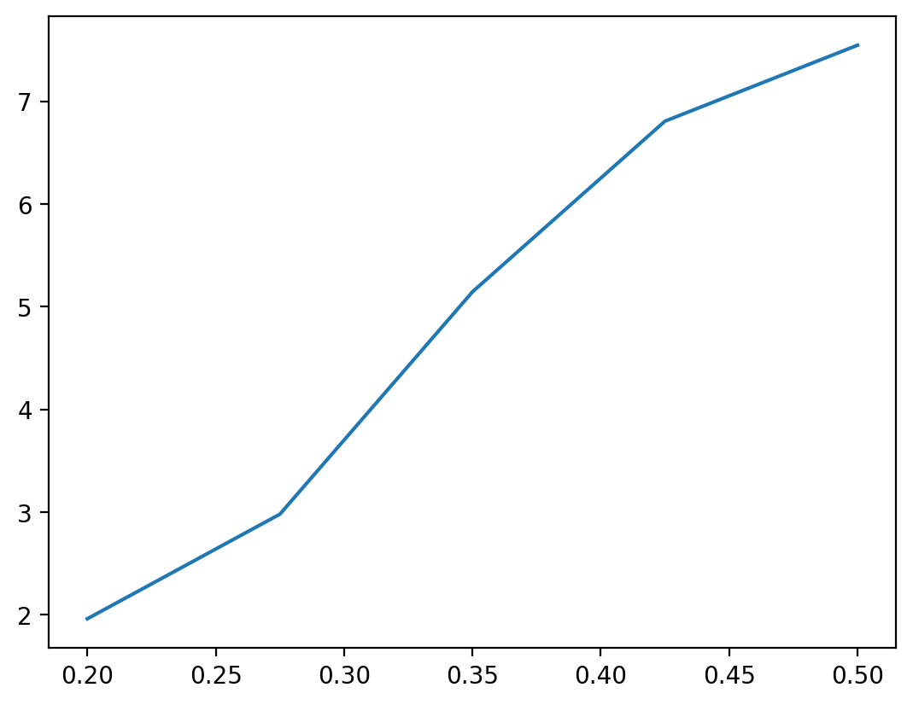
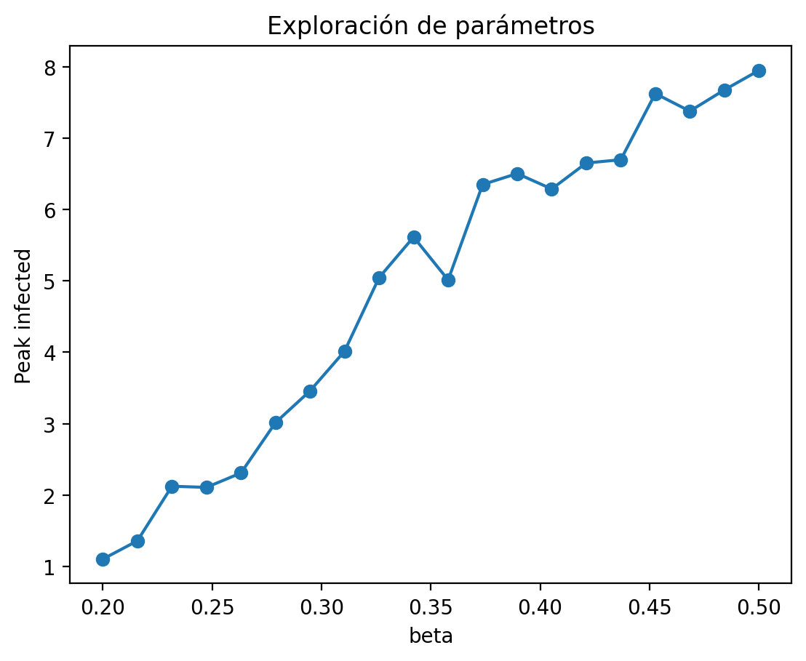

import numpy as np
import pandas as pd
import xarray as xr
import matplotlib
from multiprocessing import Pool, cpu_count
import time
from EpiCommute import SIRModel
matplotlib.rc('figure', dpi=200)
np.random.seed = 1234Paralelización de simulaciones
En muchos problemas científicos necesitamos ejecutar el mismo modelo muchas veces con distintos parámetros.
Ejemplo:
- explorar valores de beta
- probar distintos escenarios de movilidad
Estas simulaciones son independientes:
podemos ejecutarlas en paralelo
def run_model(
mobility,
subpopulation_sizes,
beta=0.375,
mu=1.0/8.0,
outbreak_source=0,
initial_infected = 10,
T_max = 150,
VERBOSE=False
):
"""
Ejecuta una simulación con EpiCommute y devuelve una métrica.
"""
M = len(subpopulation_sizes)
# Basic reproduction number
R0 = beta / mu
# Initialize the model
model = SIRModel(
mobility,
subpopulation_sizes,
R0=R0,
mu=mu,
outbreak_source=outbreak_source, # random outbreak location
dt=0.1, # simulation time interval
dt_save=1, # time interval when to save observables
I0=initial_infected, # number of initial infected
T_max=T_max, # Max simulation time
VERBOSE=VERBOSE # print verbose output
)
if VERBOSE:
print(f"- Running Epicommute using beta={beta} mu={mu} outbreak source={outbreak_source} initial infected={initial_infected}")
result = model.run_simulation()
region_ids = [f"R{i}" for i in range(M)]
time = result['t']
# Variables (time x region)
I = np.array(result['I']) # shape: (T, M)
S = np.array(result['S']) # shape: (T, M)
R = np.array(result['R']) # shape: (T, M)
# Create dataset
ds = xr.Dataset(
{
"I": (["time", "region"], I),
"S": (["time", "region"], S),
"R": (["time", "region"], R),
},
coords={
"time": time,
"region": region_ids,
}
)
# Optional: add metadata
ds.attrs["description"] = "Metapopulation SIR simulation"
ds.attrs["model"] = "SIRModel (EpiCommute)"
return dsM = 20 # Number of subpopulations
# Initialize a random mobility matrix
mobility = np.random.rand(M, M)
# Choose random subpopulation sizes
subpopulation_sizes = np.random.randint(20, 100, M)Ejecución secuencial
betas = np.linspace(0.2, 0.5, 10)
start = time.time()
result_list = []
for beta in betas:
ds = run_model(mobility, subpopulation_sizes, beta=beta, VERBOSE=True)
peak = ds["I"].sum(dim="region").max().item()
result_list.append((beta,peak))
print("--------------------")
end = time.time()
df_seq = pd.DataFrame(result_list, columns=['beta', 'peak'])
print(f"Tiempo secuencial: {end - start:.2f} s")
df_seq- Running Epicommute using beta=0.2 mu=0.125 outbreak source=0 initial infected=10
Starting Simulation ...
Simulation completed
Time: 0min 4.63s
--------------------
- Running Epicommute using beta=0.23333333333333334 mu=0.125 outbreak source=0 initial infected=10
Starting Simulation ...
Simulation completed
Time: 0min 4.54s
--------------------
- Running Epicommute using beta=0.26666666666666666 mu=0.125 outbreak source=0 initial infected=10
Starting Simulation ...
Simulation completed
Time: 0min 3.49s
--------------------
- Running Epicommute using beta=0.30000000000000004 mu=0.125 outbreak source=0 initial infected=10
Starting Simulation ...
Simulation completed
Time: 0min 2.89s
--------------------
- Running Epicommute using beta=0.33333333333333337 mu=0.125 outbreak source=0 initial infected=10
Starting Simulation ...
Simulation completed
Time: 0min 3.28s
--------------------
- Running Epicommute using beta=0.3666666666666667 mu=0.125 outbreak source=0 initial infected=10
Starting Simulation ...
Simulation completed
Time: 0min 3.12s
--------------------
- Running Epicommute using beta=0.4 mu=0.125 outbreak source=0 initial infected=10
Starting Simulation ...
Simulation completed
Time: 0min 2.66s
--------------------
- Running Epicommute using beta=0.43333333333333335 mu=0.125 outbreak source=0 initial infected=10
Starting Simulation ...
Simulation completed
Time: 0min 2.40s
--------------------
- Running Epicommute using beta=0.4666666666666667 mu=0.125 outbreak source=0 initial infected=10
Starting Simulation ...
Simulation completed
Time: 0min 2.77s
--------------------
- Running Epicommute using beta=0.5 mu=0.125 outbreak source=0 initial infected=10
Starting Simulation ...
Simulation completed
Time: 0min 2.22s
--------------------
Tiempo secuencial: 32.01 s| beta | peak | |
|---|---|---|
| 0 | 0.200000 | 1.994071 |
| 1 | 0.233333 | 1.913286 |
| 2 | 0.266667 | 3.866672 |
| 3 | 0.300000 | 4.195203 |
| 4 | 0.333333 | 4.772264 |
| 5 | 0.366667 | 5.681096 |
| 6 | 0.400000 | 6.318661 |
| 7 | 0.433333 | 6.137835 |
| 8 | 0.466667 | 7.308324 |
| 9 | 0.500000 | 8.760814 |
import matplotlib.pyplot as plt
plt.plot(df_seq['beta'], df_seq['peak'])
Ejecución en paralelo
def run_model_wrapper(beta):
ds = run_model(
mobility=mobility,
subpopulation_sizes=subpopulation_sizes,
beta=beta
)
# extraemos métrica
peak = ds["I"].sum(dim="region").max().item()
return {
"beta": beta,
"peak": peak
}from multiprocessing import Pool
import numpy as np
import time
CPUS = 10
betas = np.linspace(0.2, 1.0, 50)
start = time.time()
results = []
with Pool(processes=CPUS) as pool:
results = pool.map(run_model_wrapper, betas)
end = time.time()
print(f"Tiempo paralelo: {end - start:.2f} s")
df_par = pd.DataFrame(results)
df_par.head()--------------------------------------------------------------------------- RemoteTraceback Traceback (most recent call last) RemoteTraceback: """ Traceback (most recent call last): File "/usr/lib/python3.10/multiprocessing/pool.py", line 125, in worker result = (True, func(*args, **kwds)) File "/usr/lib/python3.10/multiprocessing/pool.py", line 48, in mapstar return list(map(*args)) File "/tmp/ipykernel_1830681/1536912294.py", line 2, in run_model_wrapper ds = run_model( File "/tmp/ipykernel_1830681/2258633794.py", line 38, in run_model result = model.run_simulation() File "/home/mponce/projects/clases/mini-course-scicomp/venv/lib/python3.10/site-packages/EpiCommute-0.0.1-py3.10.egg/EpiCommute/model.py", line 342, in run_simulation self._update_infection() File "/home/mponce/projects/clases/mini-course-scicomp/venv/lib/python3.10/site-packages/EpiCommute-0.0.1-py3.10.egg/EpiCommute/model.py", line 386, in _update_infection dSI_i = binom.rvs(S[i], expon.cdf( File "/home/mponce/projects/clases/mini-course-scicomp/venv/lib/python3.10/site-packages/scipy/stats/_distn_infrastructure.py", line 3463, in rvs return super().rvs(*args, **kwargs) File "/home/mponce/projects/clases/mini-course-scicomp/venv/lib/python3.10/site-packages/scipy/stats/_distn_infrastructure.py", line 1099, in rvs raise ValueError(message) ValueError: Domain error in arguments. The `scale` parameter must be positive for all distributions, and many distributions have restrictions on shape parameters. Please see the `scipy.stats.binom` documentation for details. """ The above exception was the direct cause of the following exception: ValueError Traceback (most recent call last) Cell In[17], line 12 10 results = [] 11 with Pool(processes=CPUS) as pool: ---> 12 results = pool.map(run_model_wrapper, betas) 14 end = time.time() 16 print(f"Tiempo paralelo: {end - start:.2f} s") File /usr/lib/python3.10/multiprocessing/pool.py:367, in Pool.map(self, func, iterable, chunksize) 362 def map(self, func, iterable, chunksize=None): 363 ''' 364 Apply `func` to each element in `iterable`, collecting the results 365 in a list that is returned. 366 ''' --> 367 return self._map_async(func, iterable, mapstar, chunksize).get() File /usr/lib/python3.10/multiprocessing/pool.py:774, in ApplyResult.get(self, timeout) 772 return self._value 773 else: --> 774 raise self._value ValueError: Domain error in arguments. The `scale` parameter must be positive for all distributions, and many distributions have restrictions on shape parameters. Please see the `scipy.stats.binom` documentation for details.
import matplotlib.pyplot as plt
plt.plot(df_par["beta"], df_par["peak"], marker="o")
plt.xlabel("beta")
plt.ylabel("Peak infected")
plt.title("Exploración de parámetros")
plt.show()
Versión con múltiples parámetros
def run_model_params(params):
beta, outbreak_source = params
ds = run_model(
mobility=mobility,
subpopulation_sizes=subpopulation_sizes,
beta=beta,
outbreak_source=outbreak_source
)
peak = ds["I"].sum(dim="region").max().item()
return {
"beta": beta,
"source": outbreak_source,
"peak": peak
}betas = np.linspace(0.2, 0.5, 6)
sources = [0, 5, 10]
param_grid = [(b, s) for b in betas for s in sources]with Pool(processes=CPUS) as pool:
results = pool.map(run_model_params, param_grid)
df = pd.DataFrame(results)for s in df["source"].unique():
subset = df[df["source"] == s]
plt.plot(subset["beta"], subset["peak"], label=f"source={s}")
plt.legend()
plt.xlabel("beta")
plt.ylabel("peak")
plt.title("Exploración de parámetros")
plt.show()